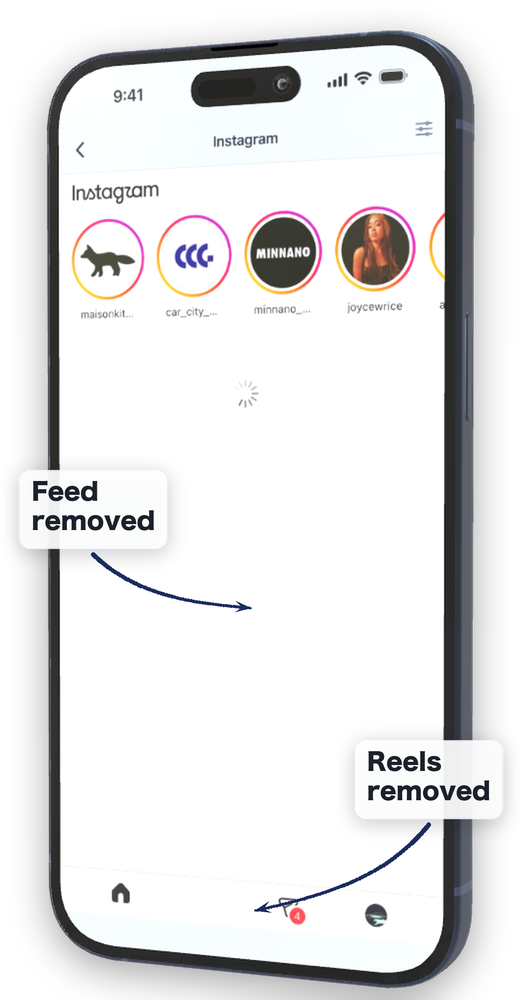
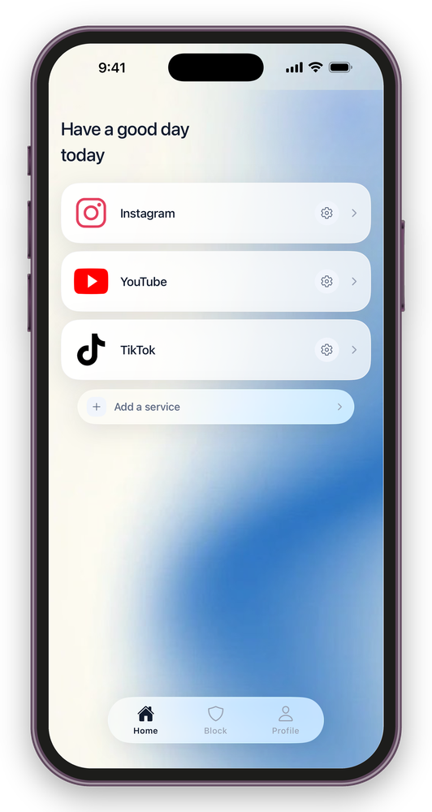
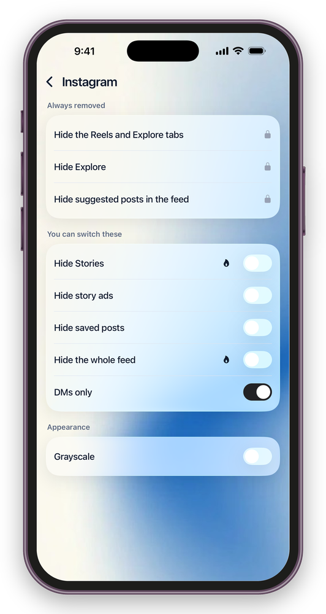
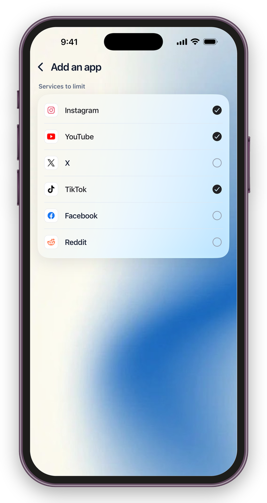

Keep social media.
Stop the endless scroll.
Your DMs and the people you follow stay exactly where they are.
The Mac app needs macOS 26.5 or later




You only opened it to check a DM
What you came for took thirty seconds. Thirty minutes later you are still there, and you cannot really say what you were looking at.
Just one video before bed
One video calls the next. You look up and an hour is gone. You knew you had an early start well before it ended.
A short break you cannot come back from
Five minutes was the plan. Getting your attention back into the work then costs you more time on top of it.
You do not want to quit social media. You need it for work and for daily life, so deleting the app is not an option.
What you want gone is only what keeps arriving without you choosing it.
For anyone who set limits with Screen Time or Opal, lifted them the moment a message came in, and never put them back.
The core hiding features are free
What you pay for is not the hiding. It is having it start without you opening it, and being harder to switch off.
FREE
- Tidy every service, not just one
- Hiding Reels, short-form video, recommended posts and ads
- DMs and normal browsing stay
- Locking the original social apps
- A record of every turn-back, and today’s screen time
PAID
- Days and time ranges
- Lock Mode
The core hiding features are not built to be something you have to pay for.
What goes / What stays
- Reels, short-form video, recommended videos
- Posts the algorithm picked for you
- The Explore and Discover tabs
- Ads, and the recommendations that behave like ads
- Stories (switchable per service)
- DMs and messages
- Profiles you go and look at yourself
- Posts your friends send you
- Ordinary posts and replies
- Search
* What is available differs from service to service.
Make it invisible. Then make it hard to open.
Choose what disappears, service by service
Hide Reels and short-form video, the Explore tab, and the recommended posts inside the feed. For each service you can also switch Stories, ads, saved posts and a DM-only mode on or off (paid). Keep what you need, and cut down only what you did not want to see.
It can lock the original apps too
You can set it so that opening the original social app from your home screen sends you back to FeedMinus. It is there for the moment when you have hidden everything and still end up opening the usual app. This feature needs access to Screen Time on your iPhone.
A pause before you unlock
While Lock Mode is on, rule switches, sleep and schedule changes and the five-minute pass are frozen too. Leaving it takes three steps and a few minutes. Copy out a passage. Answer a mental sum. Wait sixty seconds. The point is not to make unlocking impossible, but to put some time between the impulse and the action.
Post from inside FeedMinus
Posting and replying work inside FeedMinus. If you post for work, you can do it without the errand turning into an hour.
Only the feed and short-form video are gone. Finish the errand and close it.
Days and hours
Set the days and the hours when FeedMinus is on — evenings only, weekdays only, whatever fits.
When the time you set comes around, the lock turns itself on.
Today’s screen time
Shows how much you have used today.
Not a ranking and not a contest against your past self — just a look at how you are using it now.
Draw the same line on your desk.
Clear the feed and
short-form video in your browser
Safari, Chrome, Edge, Brave and Arc. What you already do on your phone carries over to the machine you work on.
It works before you add the extension
Even without the extension, it starts working the moment you choose where entries should go, sending the entry points for feeds and short-form video to where the errand actually is. The browser extension can come later. This redirect needs macOS Automation permission.
Nothing on the page leaves your Mac
What is on the page you are reading never goes anywhere. The only thing stored is which things you chose to hide.
macOS 26.5 or later. Notarized by Apple, so it opens straight after downloading.
Frequently asked
- How far does the free version go?
- Hiding Reels, short-form video, recommended posts and ads — the core of the app — is free. Today’s screen time is free as well.
There is no limit on how many services you add, and locking the original social apps is free too. Three things are paid: setting days and hours, Lock Mode, and choosing yourself what gets hidden. - Where do my login details go?
- You sign in to each service on that service’s own login page. The developer of FeedMinus does not obtain or store your ID or password.
FeedMinus also has no feature that sends the contents of your DMs or your browsing history to the developer. - Will I be unable to delete the app?
- You can delete FeedMinus itself at any time. Lock Mode takes three steps to leave, but the app is not designed to stand in the way of deleting it.
It is built to put time before an impulsive unlock, not to shut you in. - I have to post to social media for work
- Posting and replying work inside FeedMinus, with the feed and short-form video gone, so posting for work does not turn into an hour of scrolling.
- Where are my usage records kept?
- Usage records are stored on your device only. The apps you choose to block are handled through Apple’s own privacy protections.
Neither what you selected nor your usage records are sent to the developer of FeedMinus. They are shown on your screen and nowhere else. - My service is not supported
- Ten services are supported today (Instagram, YouTube, X, Threads, Pinterest, TikTok, Facebook, Reddit, LinkedIn, Snapchat). Four more are being tested and worked on.
When a service changes its screens, something that used to be hidden can come back. Tell us through support inside the app and it will be handled as each case is confirmed.